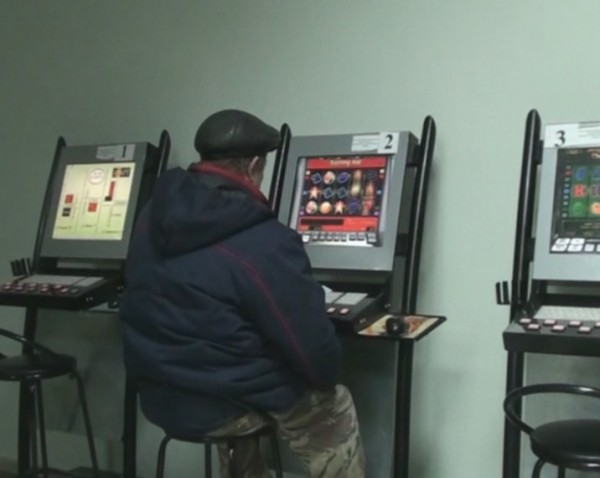
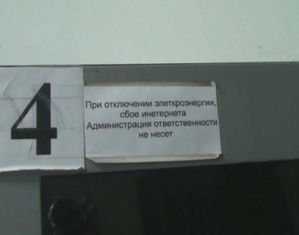

В понедельник Дмитрий Анатольевич бороздя просторы мировой паутины наткнулся на сайт ГдеКазино. Там не было ни голого Обамы, ни данных о стоимости барреля нефти в 2014 году, но увиденное президента шокировало. На сайте энтузиастами были собраны данные о большинстве нелегальных казино, работающих в российских городах.
Генеральный прокурор Юрия Чайка был вызван к столу. Президент прямо при прокуроре подержал в руках Ipad (надеюсь второй?) с открытым на нём сайте. Не понятно на что сетовал президент. Информация о том, что игровые клубы вполне резонно и успешно мимикрировали под интернет-кафе не секрет вообще ни для кого.
Причем полагаю, что действуют они примерно в рамках закона. Разве незаконно предоставлять людям подключенные к интернету компьютеры? Разве незаконно принимать у граждан деньги в пользу третьих лиц и рассчитываться за третьих лиц с гражданами? Думаю, что всё в порядке здесь. Вместе со мной также думает и генеральный прокурор.
«По словам Чайки, в условиях действующего законодательства организаторов незаконной деятельности сложно привлечь к серьезной ответственности. Чаще всего наказание ограничивается денежным штрафом за незаконное предпринимательство.»
Законодатели в очередной раз хотели позаботится о своих непутёвых гражданах, но в очередной раз оставили возможность для злоупотреблений как с одной так и с другой стороны.
Сайт «ГдеКазино», кстати, после слов Президента отвалился и заработал только сегодня. А сотрудники кемеровских правоохранительных органов после слов президента работать не перестали. Надо признать что это уже не первое закрытие подобных заведений в Кемерово.
Как сообщает пресс-служба кемеровского УВД, в салоне расположенном на улице Дзержинского, на момент проверки находилось два посетителя. Игровые автоматы, называемые заядлыми игроками «компот» давно вывезены в неизвестном направлении. На мониторах в подобных «интернет салонах» специально оборудованные компьютеры с открыт специализированными сайтами, предоставляющими услуги игры «на деньги».
Сотрудники салона как и положено сделали лицо «мопед не мой», что, на мой взгляд, вполне справедливо.


Спрос есть. И вместо того чтобы этот спрос контролировать государство продолжает создавать возможности для нелегального бизнеса, чтобы вновь и вновь бороться с ветряными мельницами.
Ссылки по теме: